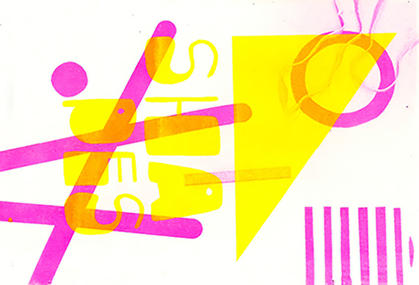
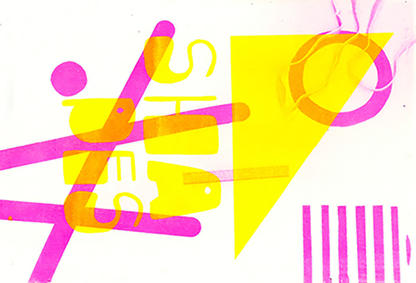

Archives et collections
Édition collaborative au format 21✖️29,7 cm, imprimée en risographie lors d'un workshop avec Chantal Hendriksen
« Le design graphique a toujours été un lieu où se chevauchent de nombreux domaines intéressants : art, politique, poésie, industrie, imprimerie, philosophie, littérature, etc. Le design graphique moderne est né au carrefour de toutes ces disciplines distinctes. Nous le voyons vraiment comme un prisme où tout se rejoint. C'est donc un endroit extrêmement fascinant. »
Notes on Experimental Jetset, Statement and Counter-Statement, Volume 1, Roma, 2015.

 
